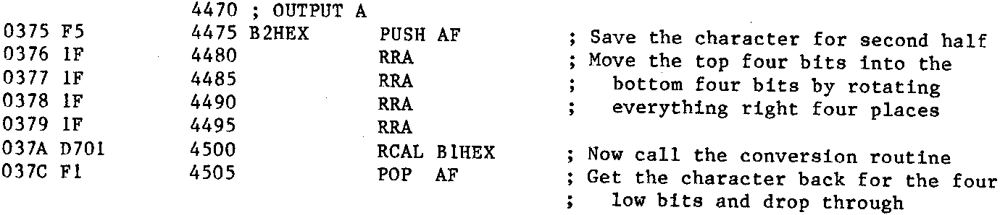
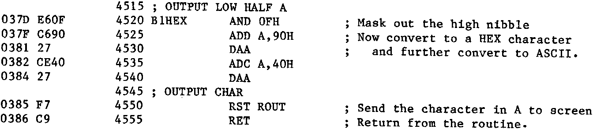

INMC 80 News |
October–December 1981 · Issue 5 |
| Page 45 of 71 |
|---|
in episode one the fact that the contents of the registers is in binary, and that binary was somewhat unmanagable for the normal mortal. It was demonstrated that HEX was a more useful format for displaying the binary information. So everything in the registers has to be converted from binary to HEX before the computer lets us have a look at it. In fact, this process becomes so transparent after a while, that it is all too easy to think of the registers containing only HEX characters, and not binary bits at all. This is a way of thought which should be avoided. Anyway, I think there is a conclusive case for the existence of routine B2HEX.
Now to its specification. Those Nascom owners with NAS-SYS already have the specification written out in the software manual, for the benefit of those not using NAS-SYS, and for the benefit of those NAS-SYS owners too lazy to look it up, it says:
Output the value in the A register in ASCII. The A register is modified.
Well, it’s not quite as clear as it could be, but what it means is, ‘put a binary character in the A register, call this routine, and the contents of the the A register will be sent to the screen as two ASCII characters expressing the value of the A register in HEX’. It also notes that the contents of the A register will be something different at the completion of the routine.
So the need for B2HEX is established, and what it does. How does it do it? Well, it’s rewritten here, lavishly smothered in comments. As a pointer, there’s nothing to stop you smothering your copy of the NAS-SYS listing with comments to make it more understandable. Before reading on, see if you can follow it.
This routine part of the routine puts the top four bits (most significant nibble) of the byte to be printed into the bottom four bits (least significant nibble) by rotating the byte to the right four times. It then calls the second routine to convert the four lowest bits into an ASCII character and then to sends it to the screen.
This half of the routine first gets rid of the top four bits by ANDing it with 0FH, then it performs a bit of arithmetic on it to convert it into a printable ASCII character. It then calls the screen output routine to print it on the screen.
Got it, good, you can forget the rest of this article, and any subsequent ones, ‘cos you’re there already» For those who don’t thoroughly understand it, here follows the detail blow by blow description.
| Page 45 of 71 |
|---|